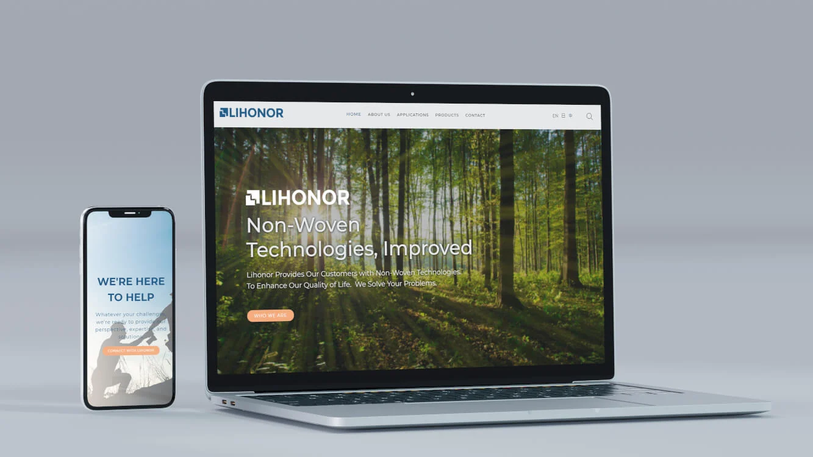
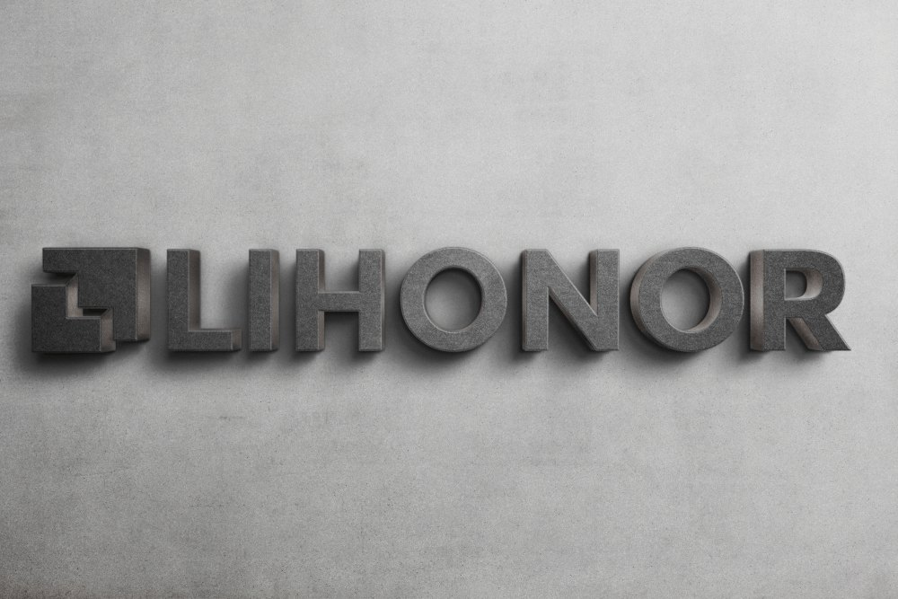
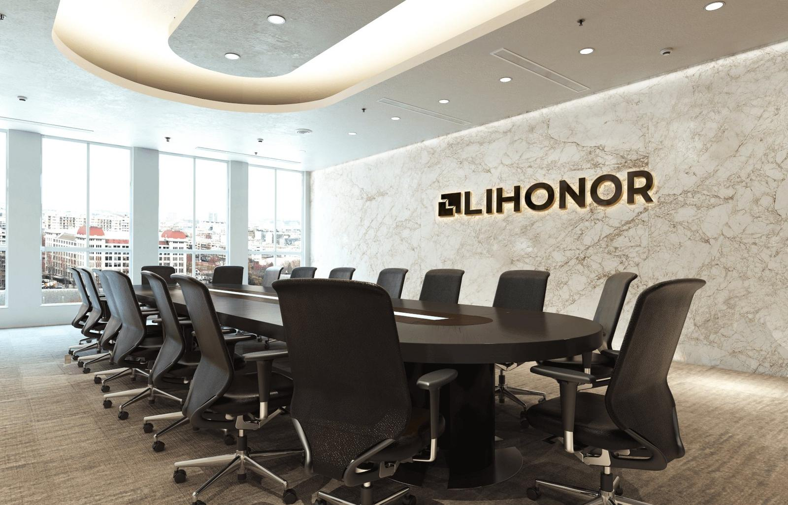
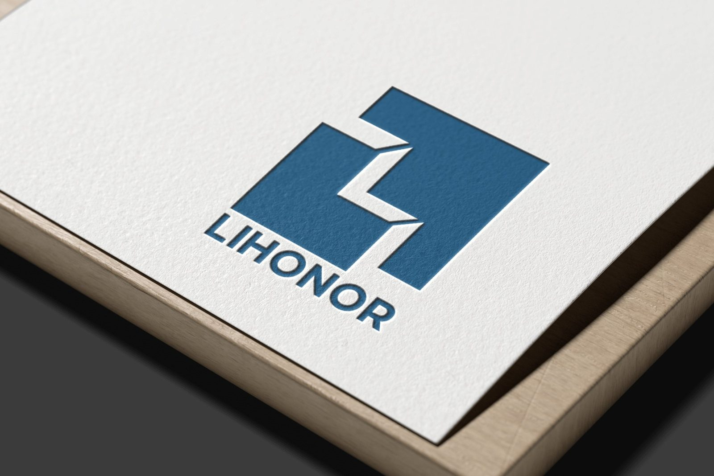
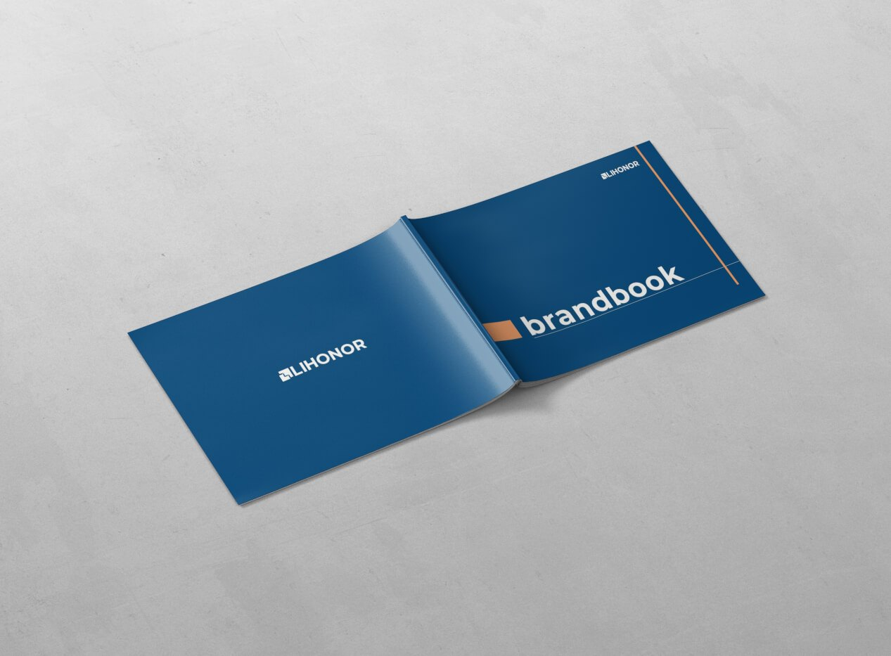
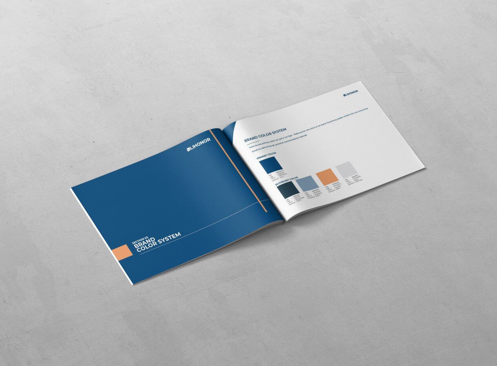
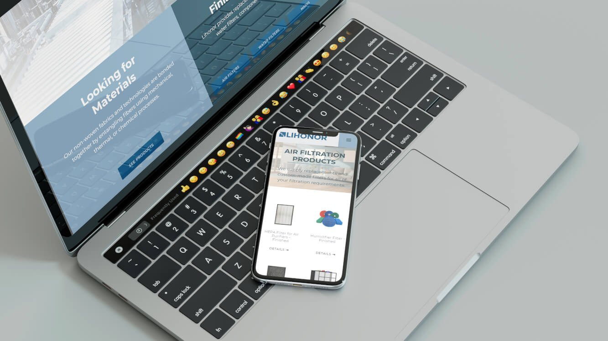
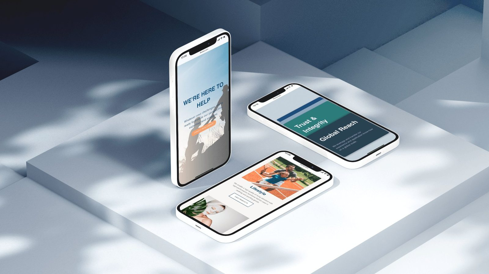
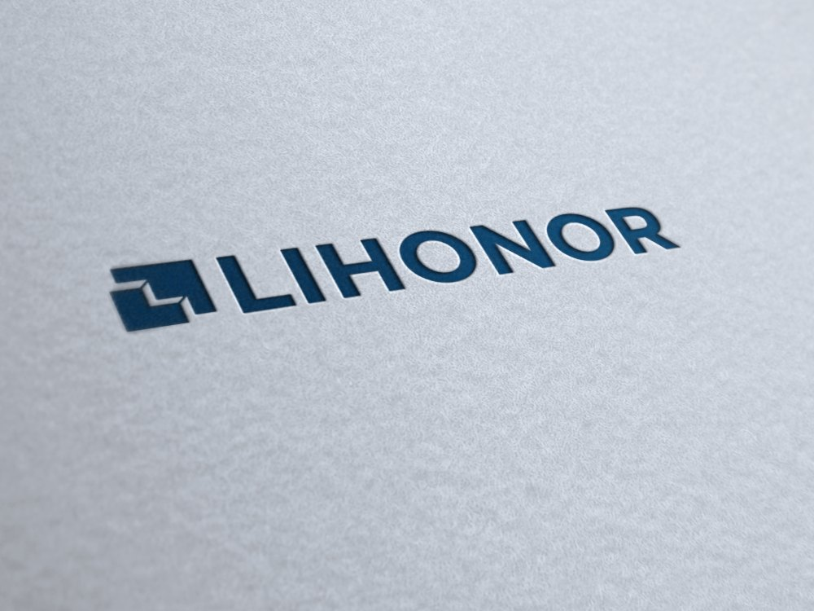

B2B · Brand Upgrade
Crafted
for Legacy
Lihonor specializes in innovative nonwoven technology for filtration applications.

Lihonor
B2B · Brand Upgrade
- Brand Identity
- Product Showcase
- Website Development
B2B. Modern. Credibility.
Goal
Lihonor needed a refined brand identity to position itself as a premium leather goods brand.
Solution
Pulse Branding developed a sophisticated visual identity and logo design, ensuring brand cohesion
What we delivered.
Brand Identity
Created a sophisticated visual identity to reflect expertise in nonwoven filtration solutions.
Product Showcase
Developed a comprehensive product catalog to showcase advanced technology.
Website Development
Built a user-friendly website to convey technical innovations effectively.
The palette
- Deep blue#0a4c7c · Primary
- Deep blue surface#366c94 · Primary surface
- Off white#e5e4e6 · Secondary
- Off white shade#c6cfd7 · Secondary shade
The work








Where it landed
The branding elevated Lihonor's market presence, establishing it as a luxury brand synonymous with quality and enduring craftsmanship.
Have a similar business problem?
Bring us the problem.
You do not need to know which service you need. Start with the problem, or run the free audit and let the evidence choose the next step.